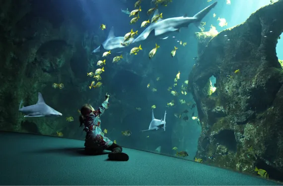
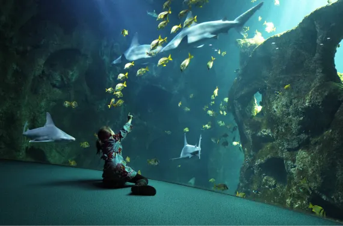
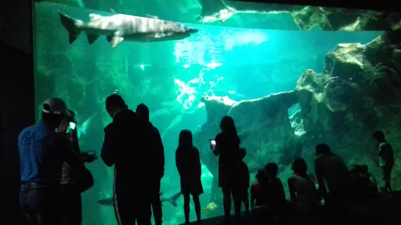
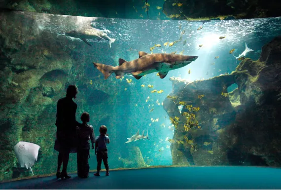
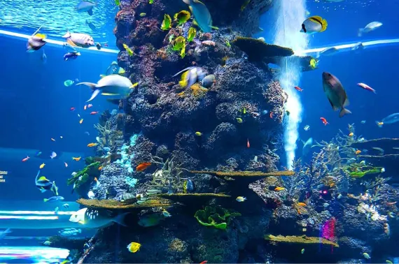

.svg)


Histoire de ce petit monde sous-marin
L’aquarium de la Rochelle a été bâti en 1970 par René Coutant. C’est l’un des plus grands aquariums d’Europe. René Coutant étant passionné du monde sous-marin, et ingénieur horticole, c’est tout naturellement qu’il invente, en 1950, les premiers aquariums d’eau de mer. Et c’est donc en 1970 qu’il décide de s’installer à la Rochelle avec tout son petit monde sous-marin.
 

Le bassin des requins
Il commence en 1960 la construction des 1ers aquariums marins. Il bâtit donc en 1970 l’aquarium de la Rochelle, qui est alors privé, et ouvrira seulement ses portes officiellement en 1988, sous la direction de ses enfants, Roselyne et Pascal. En effet, en 1985, un incident dramatique survient. Un terrible incendie ravage l’aquarium. Les deux enfants de René reconstruisent alors à nouveau l’aquarium. Il deviendra l’un des plus grands aquariums d’Europe, et le plus grand de France à l’époque.
René Coutant meurt en 1984. Lors de l’inauguration en 1988, Roselyne et Pascal lui font un hommage :
Il était passionné par les animaux marins. Et chacune de nos sorties sur l'estran donnait lieu à une découverte pour nos yeux d'enfant. De retour à notre maison, nous pouvions voir grandir et évoluer le monde marin dans les aquariums qu'il avait fabriqués. C'est là que nous avons hérité de son admiration pour le monde marin.
Le bassin exotique
Suite à l’incendie, ils mettront environ 3 ans à tout reconstruire.
Après cela, nous avons encore une date importante : en 1999, le cap des 6 millions de visiteurs est franchis. À partir de 2 000 jusqu’à aujourd’hui, peu de changements ont été fait, sauf l’agrandissement de l’aquarium.
Une autre vue du bassin exotique
Les dates clefs
- 2001 : le nouvel Aquarium est inauguré, avec ses 8 414m2, ses 12 000 animaux et 600 espèces, et ses 3 millions de litre d’eau de mer.
- 2002 : atteinte des 1 000 visiteurs
- 2009 : ouverture de l’espace des méduses
- 2012 : ouverture de l’espace du Littoral Atlantique
- 2014 : la 3ème génération de la famille prend les commandes de l’aquarium
- 2016 : ouverture de la galerie des lumières